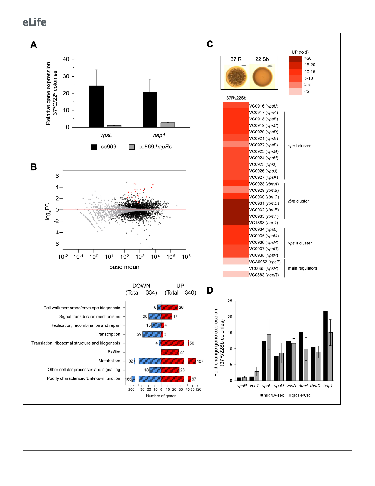

Research article
Microbiology and Infectious Disease
Figure 2. Biofilm structural components, but not regulators, are transcriptionally upregulated in rugose colonies grown at higher temperatures.
Comparison of relative gene expression between Vibrio cholerae co969 colonies incubated at 37˚C (rugose, 37R) and 22˚C (smooth, 22 Sb) by mRNA-
seq. Colonies had a similar number of colony-forming units per colony, as described under experimental procedures. (A) Relative expression of vpsL
and bap1 between colonies grown at 37˚C vs. 22˚C for co969 and co969:hapRc strains, determined by quantitative real-time polymerase chain reaction
Figure 2 continued on next page
5 of 23